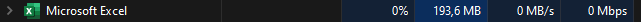
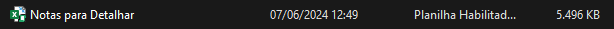
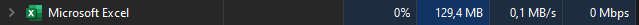
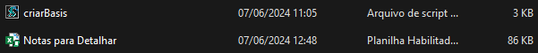

- Gabriel Henrique Armelin Munhak
Cores preferidas Preto e Vermelho
A minha comida preferida é: Chocolate Amargo
A minha musica preferida é: Breaking the Habbit do Link Park
A minha maior qualidade é: Sempre dar o meu melhor e me dedicar ao máximo em tudo o que faço.
O meu maior sucesso é: Recentemente ter conseguido tres freelances de programador.
O que eu não consigo fazer sozinho: Apresentações
A pessoa que eu mais admiro na vida: Nikola Tesla
A pessoa que eu nunca quero ser é: Uma pessoa egoista e arrogante.
O que eu mais gosto de aprender: Programação
O que eu mais gosto de ensinar: Tudo no geral, não tem uma coisa que eu gosto mais.
O que eu mais me orgulho na minha historia é: A minha persistencia.
- Encode
Lema: Nada é impossivel se você dedicar tempo e esforço para isso
Hino: Trecho de In The End [Link Park]
Time is a valuable thing
Watch it fly by as the pendulum swings
Watch it count down to the end of the day
The clock ticks life away
It's so unreal
Doação de Roupas e Agasalhos
Doação de Brinquedos
Espro
Espectativa: EAD e chato.
Realidade: Presencial e muito enriquecedor.
Empresa
Espectativa: Ambiente formal, sério e estressante.
Realidade: Um ambiente MUITO bom pra trabalhar e bem mais descontraido doque eu imaginava.
Tecnico em Análise e Desenvolvimento de Sistemas
Engenheiro Front-End
Confirmação de Ordens
Folha de Rosto
.png)
.png)
.png)
Planilha de Detalhamento de notas
- Antes
 - Depois
 Redução no tamanho do arquivo: Aproximadamente 98,43% Redução no uso de memória RAM: Aproximadamente 33,15%
Eu espero me tornar um grande programador de sucesso usando como base toda a minha experiencia juntamente com o conteúdo que eu aprendi na espro e trabalhando na ype e um dia montar o meu próprio escritorio de programação.